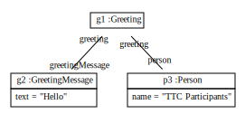

Scenario TTC2011HelloWorldModelToText
For model to text transformation we provide a simple template mechanism.
The model transformation that builds our object model looks like:
ModelPattern p = new ModelPattern().startCreate();
GreetingPO greetingPO = p.hasElementGreetingPO();
GreetingMessagePO greetingMessagePO = greetingPO.hasGreetingMessage()
.hasText("Hello");
PersonPO personPO = greetingPO.hasPerson()
.hasName("TTC Participants");
The created object model looks like:
The model to text transfromation template mechanism is used like this:
StringBuilder text = new StringBuilder("message name");
CGUtil.replaceAll(text,
"message", greetingMessagePO.getText(),
"name", personPO.getName());
systemout = text.toString();
systemout: Hello TTC Participants
Alternatively, plain java code that does this model to text transformation looks like:
systemout = greetingMessagePO.getText() + " " + personPO.getName();